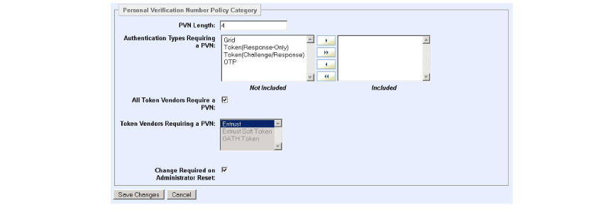

|
IdentityGuard Server 12.0 Administration Guide |
|
IdentityGuard Server 12.0 Administration Guide |
An additional policy setting that affects soft tokens is located in the Personal Verification Number policy category.
By default, if tokens are selected as an authentication type that requires a PVN, the PVN is required by all token types. If your implementation uses more than one kind of token (for example, hard tokens and Entrust IdentityGuard soft tokens), this means that Entrust soft tokens require a PVN even though these soft tokens already have (by default) a PIN as an extra layer of protection.
Complete the following procedure to have PVNs required for some types of tokens (for example, for hard tokens that do not have PIN protection available), and not for others (for example, soft tokens that have PIN protection).
Note: Second factor authentication using a mobile soft token (online or classic mode) does not use a PVN or a PIN. However, the app may be protected by a PIN if any of its soft token identities requires one.
To disable PVNs on a soft token
1. Log in to the Administration interface. (See Logging in and out of the Administration interface.)
2. Select Policies on the menu bar.
3. Find the policy to modify (see Finding a policy).
The View Policy page appears and lists all policy settings.
4. On the View Policy page, click Edit Policy.
An editable version of the settings appear.
5. From the Policy Category list, select Personal Verification Number.
The Policy Category settings appear.
6. Click Edit Policy.
An editable version of the settings appears.

For a description of each setting, see Table Table 144: .
7. Edit the settings as follows:
a If any tokens in your implementation should use PVNs, add one or both of the token types under Authentication Types Requiring a PVN to the Included list (double-click the item in the Not Included list to move it to the Included list), if they are not already there.
a. Clear the All Token Vendors Require a PVN check box.
The Token Vendors Requiring a PVN list becomes editable.
b. In the Token Vendors Requiring a PVN list, select one or more token vendor for whose tokens you want users to enter a PVN.
8. Click Save Changes.
When users with tokens that require a PVN register their tokens, they receive a PVN to unlock the token for use.
Users with tokens that do not require a PVN are not given an PVN and are not prompted to use it when they use their tokens.